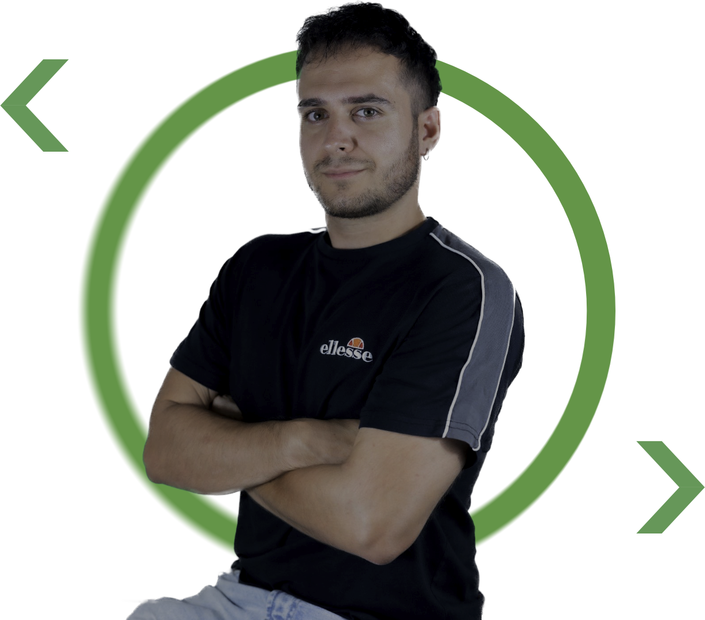

BankCLI System
Gestión transaccional y de usuarios vía consola. Lógica en Java puro.


Desarrollo BackendMás allá de la maquetación, lo que realmente me mueve es la lógica y la infraestructura del software. Actualmente curso 1º de DAW, donde he descubierto que me siento más cómodo en la terminal que en las herramientas de diseño visual. Me apasiona utilizar Java para construir la lógica de las aplicaciones y dedico mi tiempo libre a experimentar con Docker y scripts en Bash para automatizar procesos y despliegues. Mi próximo objetivo es fusionar código y creatividad aprendiendo Godot para el desarrollo de mecánicas de videojuegos. Soy curioso por naturaleza: si algo funciona, necesito entender por qué; si no, investigo hasta solucionarlo.
Gestión de expedientes y recursos sociales. Resolución de conflictos y atención directa al usuario. Desarrollo de habilidades comunicativas y gestión de situaciones bajo presión.
Mercadona Logística y gestión de stock. Trabajo en equipo en entorno dinámico, cumplimiento de objetivos diarios y organización eficiente del espacio de trabajo.
Desarrollo de Aplicaciones Web. Formación en Java, Bases de Datos, entornos de desarrollo y sistemas informáticos.
Especialización profesional en gestión y resolución extrajudicial de conflictos, negociación y comunicación estratégica.
Formación universitaria en ciencias sociales, intervención comunitaria, psicología aplicada y organización de recursos.
Gestión transaccional y de usuarios vía consola. Lógica en Java puro.

Despliegue automatizado de Jellyfin y servicios de red con Docker Compose.

Prototipo de lógica de inventario y modificación de armas en tiempo real.

Concepto de herramienta para almacenamiento y clasificación de código.